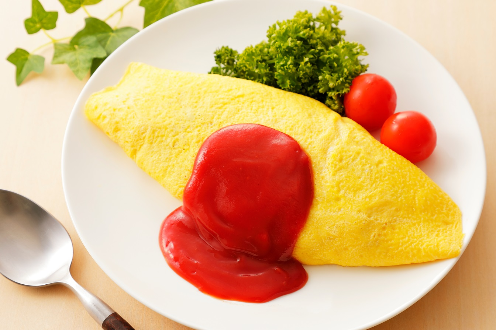

お家で簡単ふわふわオムライス
とろ〜り卵とケチャップライスの相性が抜群！簡単ステップで、お店の味をお家で楽しんでください。🍴✨
材料（2人分）
- ご飯
- お茶碗2杯分
- 卵
- 4個
- 鶏肉
- 100g
- 玉ねぎ
- 1/2個
- マッシュルーム
- 2個
- ケチャップ
- 大さじ4
- ウスターソース
- 小さじ1
- 塩
- 少々
- こしょう
- 少々
- バター
- 大さじ1
- 牛乳
- 大さじ2
- サラダ油
- 適量
作り方
- 材料を切る
- 鶏肉、玉ねぎ、マッシュルームを小さく切ります。
- 具材を炒める
- フライパンにバターを溶かし、鶏肉を炒めます。
- 鶏肉に火が通ったら、玉ねぎ、マッシュルームを加え、さらに炒めます。
- ご飯を加える
- ご飯を加え、具材とよく混ぜ合わせます。
- ケチャップ、ウスターソース、塩、こしょうを加え、味を整えます。
- 卵を準備する
- ボウルに卵を割り入れ、牛乳を加えてよく混ぜます。
- 卵で包む
- フライパンに油を熱し、卵液を流し入れます。
- 卵が半熟になったら、ケチャップライスを真ん中にのせ、フライパンからお皿に滑らせて盛り付けます。
- 仕上げ
- お好みでケチャップをかけて、完成です！